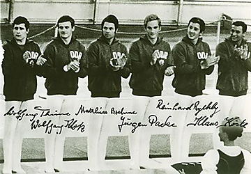

Wolfgang Thüne (GDR)
1974 World HB Silver Medalist

Thune (far left) and teammates
won the bronze medal at the
1972 Olympic Games.
Medal Total
Olympic Games: 1
Bronze
World Championships: 1 Silver, 2
Bronze
European Championships: 1 Bronze
Thüne was born on October 8, 1949. He was coached by Harry Pippardt and Wolfgang Gipser at ASK Potsdam. At the 1975 European Championships in Berne, Switzerland, he defected to West Germany, leaving his wife and daughter in the GDR. Today he coaches at Bavaria Leverkusen.
Competition Results
1967
GDR-BUL Dual Meet: 1st Team, 10th AA
1969
European Championships: 19th AA
USSR-GDR-FIN: 2nd Team, 15th AA, 1st HB
1970
USSR-GDR: 2nd Team, 3rd AA
World Championships: 3rd Team, 16th AA
1972
Olympic Games: 3rd Team, 9th AA
1973
Chunichi Cup: 3rd AA
European Championships: 4th AA, 3rd HB, 5th PH, 5th R
GDR-JPN Dual Meet: 2nd Team, 3rd AA
University Games: 6th PH
1974
Moscow News: 3rd AA
Riga International: 3rd AA
World Championships: 3rd Team, 4th AA, 2nd HB, 6th R, 6th PB
1975
European Championships: 18th AA
GDR Cup: 1st AA
Moscow News: 7th AA
Riga International: 9th AA, 3rd PB, 3rd HB
1977
FRG Championships: 1st AA
This page was created on October
12, 2002 and was last updated on Feb. 19, 2017.
© Gymn Forum